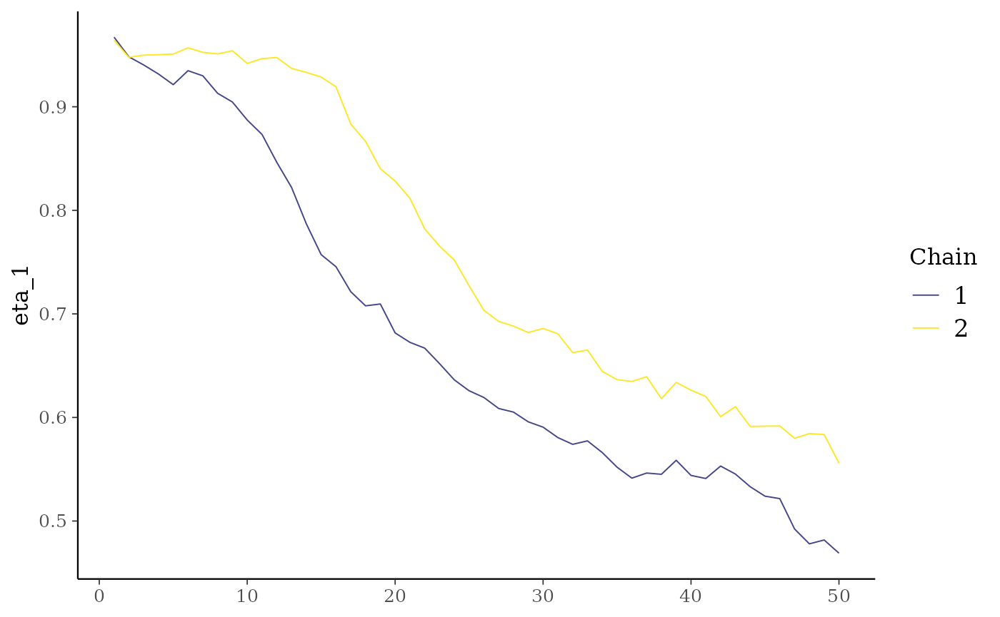

Parallel computation and posterior analysis
parallel_computation.RmdIt’s possible to run multiple chains in parallel, where each chain
will run on one core, by specifying the cores argument. Any value above
1 will automatically turn on the parallel mode. If the argument
chains is bigger than 1 and cores is set to 1
or not specified, the chains will run sequentially. The package
RcppParallel is used to run the chains in parallel.
library(lnmixsurv)
library(readr)
library(bayesplot)
color_scheme_set("viridis")
set.seed(25)
data <- simulate_data(
n = 4000, mixture_components = 3, k = 2,
percentage_censored = 0.2
)$data |>
dplyr::rename(y = t, x = cat)This piece of code will run the chains sequentially and save the times for the sake of comparison:
start_sequential <- Sys.time()
mod_sequential <- survival_ln_mixture(Surv(y, delta) ~ x, data,
iter = 50, chains = 2,
starting_seed = 5, warmup = 0
)
end_sequential <- Sys.time()
times_sequential <- tibble::tibble(start_sequential = start_sequential,
end_sequential = end_sequential)We can specify the cores argument to run the chains in
parallel. In this case, since we’re using chains = 2,
specifying any number of cores above 2 will limit the number of cores to
2. If the number of cores is between 1 and the number of chains, the
chains will be fitted in parallel limited to the number of cores.
start_parallel <- Sys.time()
mod_parallel <- survival_ln_mixture(Surv(y, delta) ~ x, data,
iter = 50, chains = 2, cores = 2,
starting_seed = 5, warmup = 0
)
end_parallel <- Sys.time()
times_parallel <- tibble::tibble(start_parallel = start_parallel,
end_parallel = end_parallel)Since the seed is fixed, the results should be the same. We can check that by comparing the posterior samples:
mcmc_trace(mod_sequential$posterior, pars = "eta_1")
mcmc_trace(mod_parallel$posterior, pars = "eta_1")It’s important to notice that these are the first 50 iterations of the Gibbs sampler executed just to show how to run the chains in parallel. The number of iterations should be increased to get reliable results.
We expect the parallel algorithm to be faster. The times for the sequential and parallel runs are:
#> [1] "Sequential"
#> Time difference of 0.4911551 secs
#> [1] "-------------"
#> [1] "Parallel"
#> Time difference of 0.3212457 secsThe parallel run should be faster than the sequential run. The speedup will depend on the number of cores available and the number of chains.